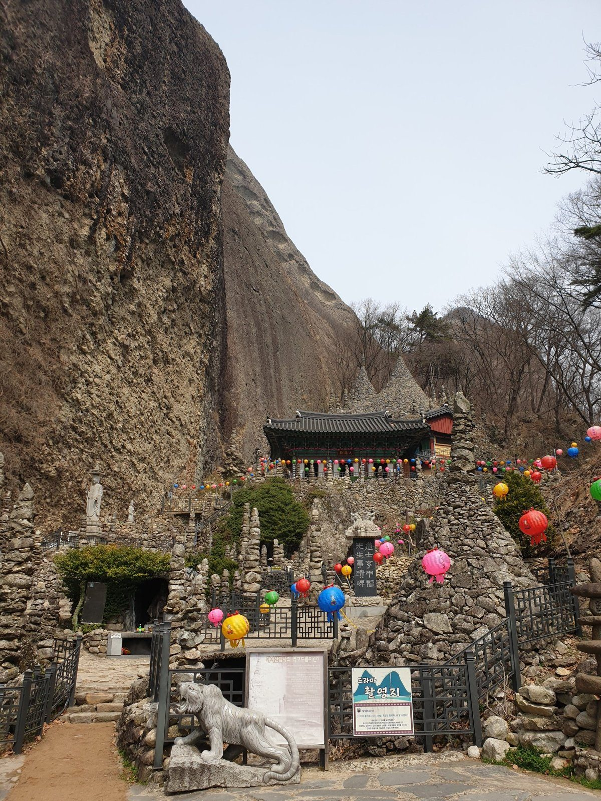
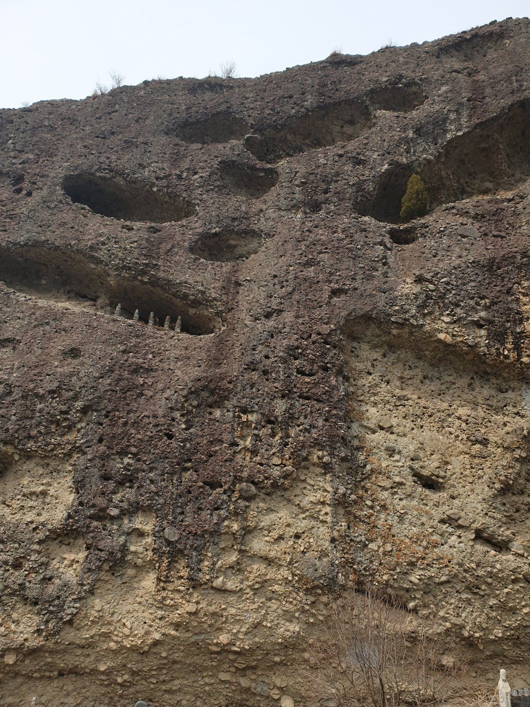

Maisan, or "Horse Ear Mountain", is one of the strangest and most memorable sights in Korea. Two rocky peaks rise out of the countryside in Jinan, about 25 kilometres east of Jeonju, shaped like a pair of horse's ears. Tucked under the cliffs between them is Tapsa, a small temple surrounded by dozens of tall, cone-shaped towers made of stacked stones. It is an easy and rewarding day trip if you are staying in Jeonju, and few foreign visitors make it here.

What makes Tapsa special
The towers were built by one man. Yi Gap-yong, a lay Buddhist who came to Maisan in 1885 to meditate, spent around 30 years stacking stones into pagodas, reportedly up to 120 of them. At least 80 still stand today, some only a metre or two high and the tallest well over the height of a house. They are made without any mortar: flat stones laid in rings, narrowing into cones, with small pebbles wedged into the gaps. More than a century of wind and storms later, they are still standing, which is the part that stays with most visitors.
The twin towers behind the main hall are said to be built from stones carried from famous mountains across Korea. The site later became a Buddhist temple, and Yi himself became a monk.
The cliffs and their "honeycomb" holes
Look up from the temple and the cliff face is full of rounded hollows, as if something had scooped out the rock. These are tafoni, cavities carved out over a very long time by wind, water and frost working on the conglomerate rock, a mix of pebbles and sand cemented together. Up close you can see the individual stones in the cliff. Some of the hollows are big enough to hold small stone towers of their own.

When to go
- Spring: Maisan's cherry blossoms are among the last to open in Korea, usually around mid-April, a week or two after Seoul. The road around Tapyeongje reservoir is lined with them, and colourful lanterns go up at the temple before Buddha's Birthday.
- Autumn: late October and early November bring red and yellow leaves against the grey rock.
- Winter: quiet and cold. In a hard frost, Eunsusa temple, near the north entrance, is known for "upside-down icicles" that grow upwards from bowls of water.
- Time of day: weekday mornings are calmest. Spring weekends are busy.
Getting there
Maisan is in Jinan County, North Jeolla. Most visitors come from Jeonju, about 40 to 50 minutes away by car. Without a car, take an intercity bus from Jeonju to Jinan, then a local bus or a short taxi ride to the park; check current times on Naver Map or KakaoMap, as rural buses are infrequent. Jeonju itself is under two hours from Seoul by KTX; see our KTX guide.
The park has two main entrances. The south entrance (Nambu) is the classic approach for Tapsa: a flat walk past Tapyeongje reservoir and up to the temple, roughly half an hour to 40 minutes at an easy pace. The north entrance (Bukbu) is closer to the twin peaks and Eunsusa, with stairs over the saddle between the "ears" down to Tapsa. If you can, go in at one side and out at the other. A small admission fee applies; check the current price before you go.
Tips for your visit
- Wear proper shoes. The paths are paved near the temples but there are many stone steps between them.
- Be respectful. Tapsa is a working temple. Speak quietly, do not climb on or touch the towers, and ask before photographing people praying.
- Combine it with Jeonju. Spend the morning at Maisan and the evening in the Jeonju hanok village.
- Eat before or after. There are restaurants by the south entrance car park; Jeonju is the place for a proper meal.
FAQ
Who built the stone towers at Tapsa?
A lay Buddhist called Yi Gap-yong, who came to Maisan in 1885 and stacked them by hand over about 30 years. At least 80 of the towers remain.
How do I get to Maisan from Jeonju?
About 40 to 50 minutes by car or taxi, or by intercity bus to Jinan and then a local bus or taxi to the park. Check current bus times on Naver Map or KakaoMap.
When do the cherry blossoms bloom at Maisan?
Usually around mid-April, later than most of Korea, because of the higher, cooler valley.